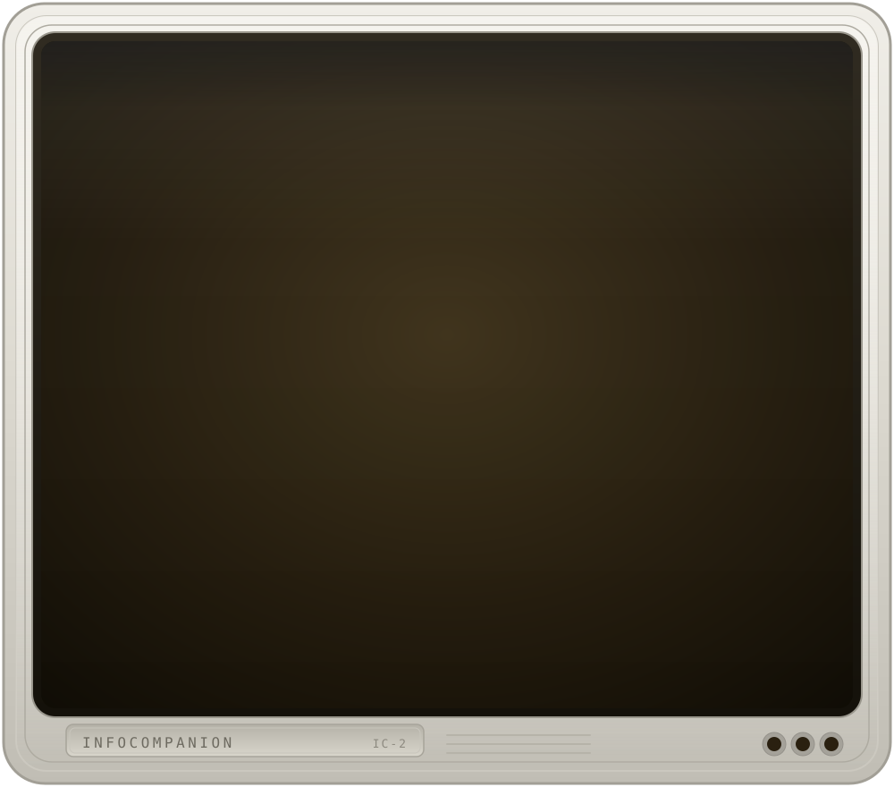

INFOCOMPANION
──────────────────────────────────────────────────────────────
the game ssh game@host -p 2223
what the story printed, and nothing else
the companion ssh companion@host -p 2223
what your friend says, and what it is thinking
your hands ssh me@host -p 2223
a prompt, and the answers to your own commands
all of it ssh player@host -p 2223
one window, as it was before any of this
the panes are views of one session, not copies of it.